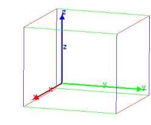
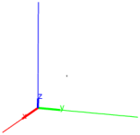

26.16.5 Pole and polar
Given a circle centered at O, a point A is a pole and a line L
is the corresponding polar if L is the line passing through the
inversion of A with respect to the circle (see
Section 26.14.7) passing through the line
OA.
The polar
command finds the polar of a point.
-
polar takes two arguments:
- polar(C,A) returns and draws the polar of the point
A with respect to C.
Example
| C:=circle(0,1); A:=point((i+1)/2); L:=polar(C,A) |

The pole
command finds the pole of a line.
-
pole takes two arguments:
- pole(C,L) returns and draws the pole of the line
L with respect to C.
Examples
| C:=circle(0,1); L:=line(i,1); P:=pole(C,L) |
